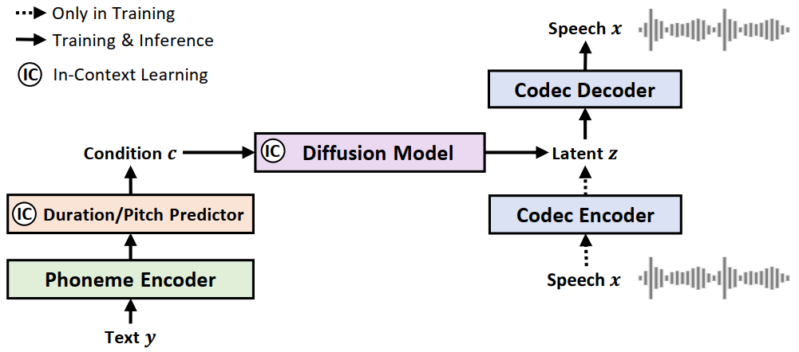
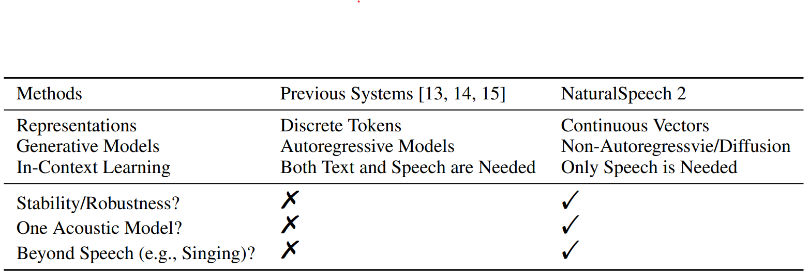

NaturalSpeech 2:
Latent Diffusion Models are Natural and Zero-Shot Speech and Singing Synthesizers
[Paper] [Reddit Discussion] [Hack News]
Kai Shen*, Zeqian Ju*, Xu Tan*, Yanqing Liu, Yichong Leng, Lei He, Tao Qin, Sheng Zhao, Jiang Bian
Microsoft Research Asia & Microsoft Azure Speech
Abstract.
While text-to-speech (TTS) systems (e.g., NaturalSpeech) have achieved high speech quality on single-speaker recording-studio datasets, these datasets are
not enough to capture the diversity in human speech such as speaker identities, prosodies, styles (e.g., singing). When scaling to large-scale, multi-speaker, and in-
the-wild datasets, current TTS systems usually quantize speech into discrete tokens and use language models to generate these tokens one by one, which suffer from
unstable prosody, word skipping/repeating issue, and poor voice quality. In this paper, we develop NaturalSpeech 2, a TTS system that uses a latent diffusion model
to synthesize natural voices with high expressiveness/robustness/fidelity and strong zero-shot ability. Specifically, we leverage a neural audio codec with residual
vector quantizers to reconstruct speech waveform and get the quantized latent vectors, and then use a diffusion model to generate these latent vectors conditioned
on text input. To enhance the zero-shot capability, we design a speech prompting mechanism to facilitate in-context learning in the duration/pitch predictor and
diffusion model. We scale NaturalSpeech 2 to large-scale datasets with 44K hours of speech and singing data and evaluate its voice quality on unseen (zero-shot)
speakers. NaturalSpeech 2 outperforms previous TTS systems by a large margin in terms of prosody/timbre similarity, robustness, and voice quality, and can perform
novel zero-shot singing synthesis with only a speech prompt.
This research is done in alignment with Microsoft's responsible AI principles.
This page is for research demonstration purposes only.
Overview

NaturalSpeech 2 consists of an audio codec encoder/decoder and a latent diffusion model conditioned on a prior (a phoneme encoder and a duration/pitch predictor).

The comparison between NaturalSpeech 2 and previous large-scale TTS systems.
LibriSpeech Samples
| Text | Prompt | Ground Truth | Baseline | NaturalSpeech 2 |
|---|---|---|---|---|
| Indeed, there were only one or two strangers who could be admitted among the sisters without producing the same result. | ||||
| For if he's anywhere on the farm, we can send for him in a minute. | ||||
| Their piety would be like their names, like their faces, like their clothes, and it was idle for him to tell himself that their humble and contrite hearts it might be paid a far-richer tribute of devotion than his had ever been. A gift tenfold more acceptable than his elaborate adoration. | ||||
| The air and the earth are curiously mated and intermingled as if the one were the breath of the other. | ||||
| I had always known him to be restless in his manner, but on this particular occasion he was in such a state of uncontrollable agitation that it was clear something very unusual had occurred. | ||||
| His death in this conjuncture was a public misfortune. | ||||
| It is this that is of interest to theory of knowledge. | ||||
| For a few miles, she followed the line hitherto presumably occupied by the coast of Algeria, but no land appeared to the south. |
VCTK Samples
| Text | Prompt | Ground Truth | Baseline | NaturalSpeech 2 |
|---|---|---|---|---|
| It is an absolute nonsense. | Truth is the child of time. | We have a long way to go this week. | Maybe we expected too much from the fixture. | We will turn the corner. | It will also require a lengthy series of clinical trials. | Subs not used, McKenzie, Ritchie. | That's the only thing I will say. |
Samples compared with VALL-E
| Text | Prompt | Ground Truth | VALL-E | NaturalSpeech 2 |
|---|---|---|---|---|
| And lay me down in my cold bed and leave my shining lot. | ||||
| Yea, his honourable worship is within, but he hath a godly minister or two with him, and likewise a leech. | ||||
| The army found the people in poverty and left them in comparative wealth. | ||||
| Thus did this humane and right minded father comfort his unhappy daughter, and her mother embracing her again, did all she could to soothe her feelings. |
Singing Samples - «Yesterday Once More»
| Lyric | Prompt Type | Prompt | NaturalSpeech 2 |
|---|---|---|---|
| Speech | |||
| Speech | |||
| Singing |
Voice Conversion Samples
| Text | Prompt | Source | NaturalSpeech 2 |
|---|---|---|---|
| Traditions to overcome. | |||
| The children the most blood-curdling ideas, to hate God, for instance. | |||
| Oh, Bartley, that old about my being hard! |
Speech Enhancement Samples
| Prompt | Source | Ground Truth | NaturalSpeech 2 |
|---|---|---|---|
Ethics Statement
Since NaturalSpeech2 could synthesize speech that maintains speaker identity, it may carry potential risks in misuse of the model, such as spoofing voice identification or impersonating a specific speaker. We conducted the experiments under the assumption that the user agree to be the target speaker in speech synthesis. If the model is generalized to unseen speakers in the real world, it should include a protocol to ensure that the speaker approves the use of their voice and a synthesized speech detection model.